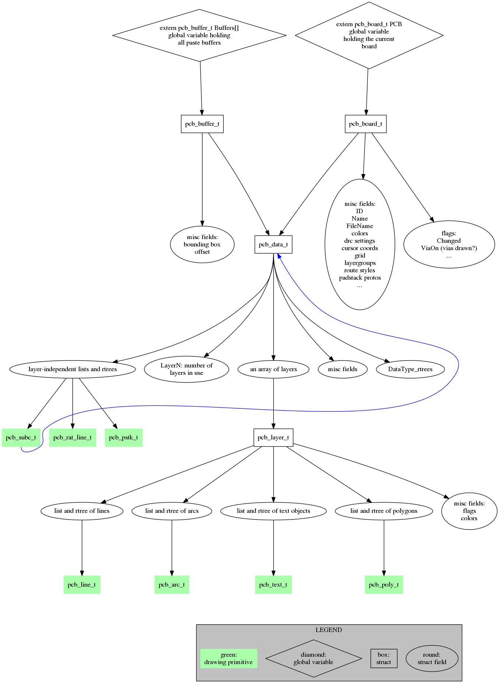

In either case, PCBType's most important field is PCBDataType *data, which holds lists and vectors to store all objects on the board. When the target is a buffer (e.g. io plugin's ->parse_element function), it's a DataType *buf which also have a PCBDataType *data containing the same data a board could.
A PCBDataType struct in turn has three sets of important fields:
Any code that needs to create objects should use the functions in create.[ch]. The functions that operate layer-independently usually get a destination as PCBDataType, so they can operate both on boards and buffers. A typical example is PinTypePtr CreateNewVia(DataTypePtr Data, ...) that returns NULL or the pointer to the new via that is already added to the corresponding list of Data and in the rtree.
Layer object creation is done referencing the layer as LayerType *. A typical example is LineTypePtr CreateDrawnLineOnLayer(LayerTypePtr Layer, ...) which returns NULL on error or a pointer to the new line object created (inserted in the layer's line list, added to the rtree).
Code should avoid manipulating the lists and rtree structures directly.
| 
Figure 1. simplified map of object related data structures diamond: variable; rectangle: struct; round: struct field |